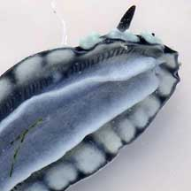
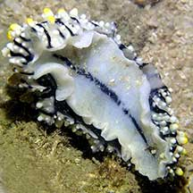

|
|
| nudibranchs text index | photo index |
| Phylum Mollusca > Class Gastropoda > sea slugs > Order Nudibranchia |
| Phyllid
nudibranchs Family Phyllidiidae updated Apr 2021 Where seen? These nudibranchs with tough skin are often encountered, especially on our Southern shores, among coral rubble and on reefs. It is believed that these nudibranchs are commonly seen because they can roam around in the open with impunity due to the nasty stuff they secrete to deter predators. Their colourful patterns probably also warn of this feature. What are phyllid nudibranchs? Phyllid nudibranchs are thick slugs with a body covered in warts or bumps. They don't have flower-like gill structures on their backs. The gills are hidden under the mantle skirt and are made up of a row as many as 100 leaflets, along the length of the body on either side of the foot. Their short rhinophores are often overlooked among all the bumps on their bodies. The different genus are identified by the position of the anus (in the middle of its back for Phyllidia species), and shape of the oral tentacles. What do they eat? Phyllids eat sponges. They lack a radula and don't rasp the sponge. Instead, digestive juices are secreted into the sponge and the partially digested sponge is sucked up. Sort of like a sponge slurpee. Some species may insert a large feeding organ called the pharyngeal bulb deep into the sponge to eat it. Members of the Family Phyllidiidae absorb the toxic chemicals in their sponge food and incorporate these chemicals in their own defence. They produce a milky white substance. This is lethal to other nudibranchs especially if they are kept in the same tank. Human uses: Although colourful, phyllids are not popular in the aquarium trade as they produce a powerful toxin that can kill off the entire tank. The toxins produced are so strong that the water from the aquarium may have an acrid smell. The properties of these toxins are currently being studied for possible applications such as in human medicine and anti-fouling uses. |
 Short rhinophores of the Varicose phyllid look like the orange blobs on its body. St. John's Island, May 05 |
 Gills on the underside along the length of the body St. John's Island, Jan 06 |
| Some Phyllid nudibranchs on Singapore shores |


| More Phyllid nudibranchs on Singapore shores |
 Phyllidia elegans (underside) |
Links
|